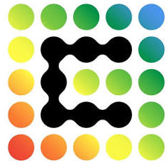
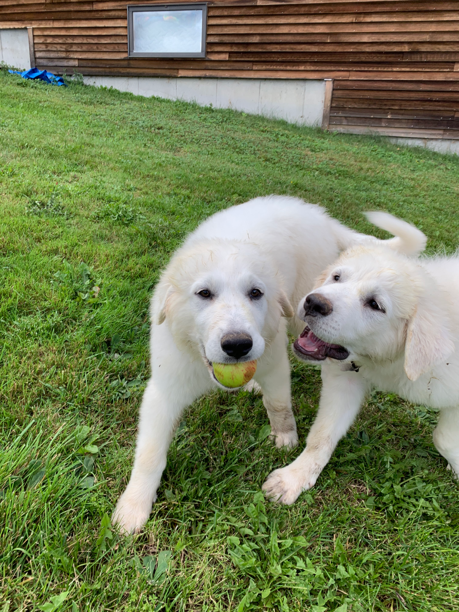
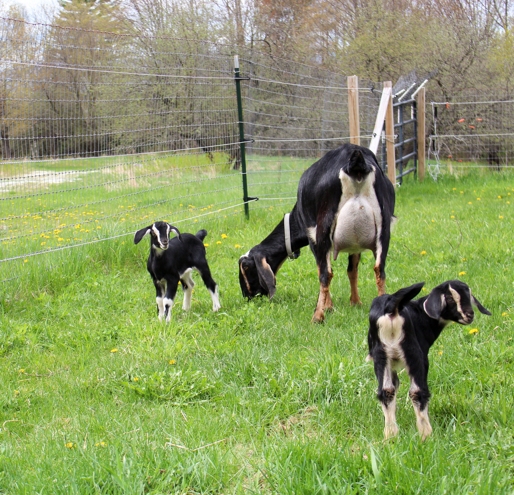
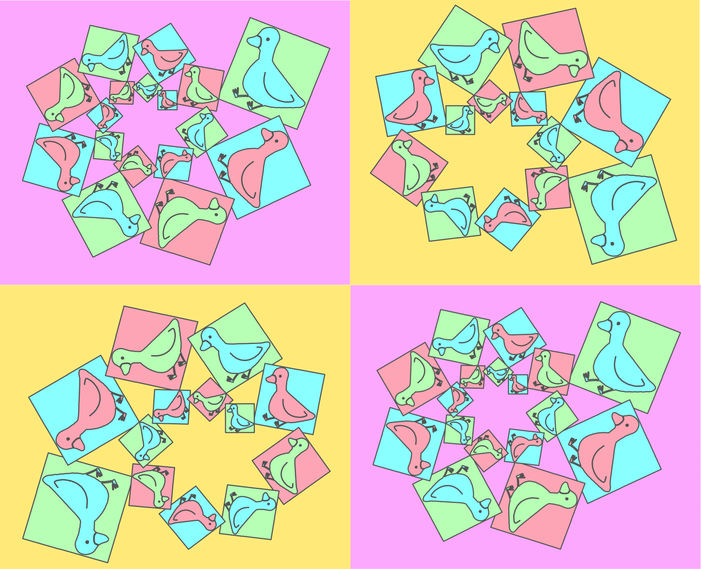

Senior Marketing Analyst at Cirrus Systems, where I steer a multi-million-dollar paid social spend with custom built data infrastructure.

Managing the spend across all Meta and TikTok campaigns requires precision.
Design A/B testing on forms, landing pages and audiences to boost performance.
Every dollar accounted for and put to good use.
I engineered a custom marketing and sales database on Google Cloud.
Data refreshes live data across the organization.
Over $20k and 1,000 hours saved per year–no more reliance on overpriced APIs and manually uploading CSVs.
Polished Looker Studio dashboards that leadership can read in seconds.
The source of truth for sales and marketing performance.
Managed 15 TAs and mentored 52 students over nine semesters — modeling, visualization, methodology, and the harder part: saying what the data means.
I worked with Dr. Michael Perez to design a study on immigration sentiment.
We sent it to a panel of 342 respondents, performed MANOVAs, graphed the data, and presented the findings to peers and professors alike.
My team won the 48-hour competition in 2024 with a fantastic team.
Now I go back every year to help other students take on the hackathon and explore their passion for data science.
My pieces only exist in my head–and in my phone's voice memos.
Goat farming in New Hampshire, black diamond skiing in the Adirondacks, hiking in Maine, kayaking on the Charles. I can't recall an outdoor experience I don't enjoy, especially if animals were involved!



Evan WacksData mercenary by day, piano-man by night. Goat farming in New Hampshire, skiing in the Adirondacks, hiking in Maine, kayaking on the Charles in Boston. Spending time with friends and family in such beautiful environments.
I manage paid social spend across Meta and TikTok. Getting it right means constantly looking for room for improvement, conducting rigorous A/B testing on forms, landing pages, audiences–carefully testing and accounting for every dollar spent.
Politicians are right, infrastructure isn't always fun, but it's critical. I happen to enjoy it, and it doesn't hurt that building bespoke marketing and sales data infrastructure led to $20k/yr and 1,000+/hrs a year of time in savings.
The draft graphs I craft might be head scratchers, but putting in the time is always worth it. A polished (Looker) dashboard means leadership gets the point quickly, leading to massive savings on expensive dandruff shampoos.
Trepidation best describes how I felt walking into my first data class. If I let that fear live, I wouldn't have had the privilege of mentoring 52 students over nine semesters, helping them explore their interests and discovering a passion for data they never knew they had.
I told Prof. Perez I never wanted to conduct research. He recruited me anyway. I got to design a study, write a survey, distribute it to hundreds of Americans, perform MANOVAs, then present on it. I'm incredibly grateful for him inviting me to the world of research. It gave me an appreciation for experimental and observational studies otherwise unobtainable through solving problem sets and reading papers.
After losing the previous year, my team won DataFest in 2024. I realized I loved two elements the most, learning from my previous mistakes, and seeing my team flourish. Now, as a consultant, I get to help students learn how to operate successfully as a team and share their fascinating data insights with their peers and the judges.
I don't know how to read or write music. I don't know proper form. I can't name a single chord, then play it. Those all are a-minor inconvenience and I don't let them stop me.
Zeus and Padme started small, stealing the beds and couches. Then they graduated and learned organized crime, teaming up with the goats to steal my heart.